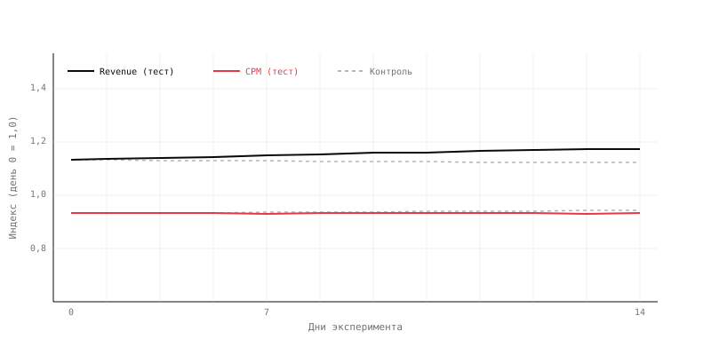
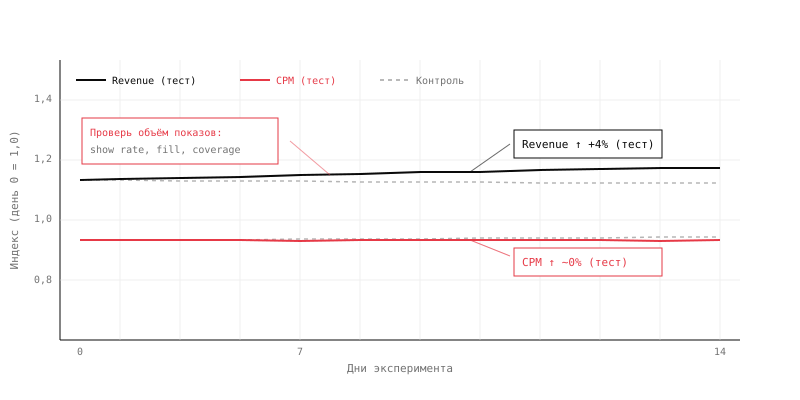

Выручка растёт без роста CPM
14 дней эксперимента. В тестовой группе выручка выросла на 4%, цена показа не двигалась. Нужно понять, откуда пришёл рост и можно ли катить в прод.
Команда изменила механику показа в тестовой группе — lazy load и логику видимости рекламного блока. Цель — рост выручки за счёт увеличения числа монетизируемых показов.
Эксперимент длился 14 дней. Трафик стабилен, сезонных эффектов нет. Контрольная группа без изменений.
По итогу: выручка в тестовой группе выросла на 4%. CPM практически не изменился (~0%).

- Если CPM не вырос, а выручка выросла на 4% — какая переменная в формуле выручки изменилась?
- В какой момент эксперимента эффект становится видимым и устойчивым?
- Какие метрики нужно проверить, чтобы убедиться, что рост идёт через объём, а не через композиционный сдвиг?
Показать разбор
На графике видно: выручка в тесте растёт с первых дней эксперимента и к концу устойчиво выше контроля. CPM при этом держится на уровне контроля — линия практически горизонтальна.
Почему так бывает. Выручка — это CPM × объём монетизируемых показов. Если CPM не двигается, а выручка растёт, значит вырос объём: либо больше запросов конвертируется в показы (fill), либо блок чаще становится видимым (show rate / coverage), либо инвентарь, который раньше не монетизировался, начал показываться. Цена при этом может оставаться прежней — структура спроса и конкуренция в аукционе не изменились.
Где глаз обманывается. Лёгко решить, что эксперимент провалился, потому что главная метрика монетизации — CPM — не сдвинулась. Но цена и деньги — это не одно и то же. Если смотреть только на CPM, эффект через объём остаётся невидимым.

Что проверить.
- Shows / monetizable shows — вырос ли физический объём показов в тесте.
- Show rate, fill rate — улучшилась ли воронка от запроса до показа.
- Requests → responses → shows — на каком шаге воронки произошёл прирост.
- Разрезы по плейсментам и устройствам — исключить mix shift: рост может прийти из перераспределения между сегментами, а не из общего улучшения.
Неверный вывод: «CPM не вырос — значит изменение не работает. Эффекта нет.»
Верный вывод: Изменение механики показа подняло объём монетизируемых показов — отсюда +4% выручки при неизменном CPM. Эффект реальный, но идёт через воронку, а не через цену. Перед раскаткой нужно проверить guardrails: качество показов, viewability, fatigue инвентаря — чтобы убедиться, что рост объёма не привёл к деградации других метрик.
Чего нельзя утверждать: «Цена улучшилась» — CPM не двигался. «Рынок стал дороже» — конкуренция в аукционе не изменилась. «Эффект устойчив» — без проверки guardrails и без данных за более долгое окно это предположение, а не вывод.
Механика, которая объясняет этот сценарий, разобрана в уроке 01. Цена и объём.